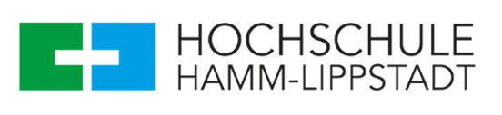
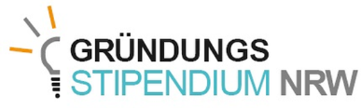
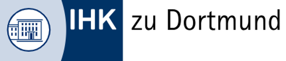
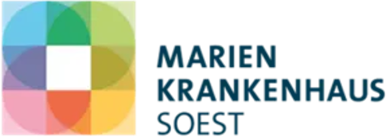
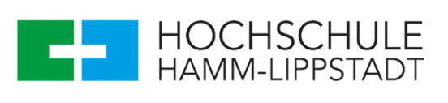
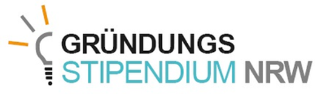
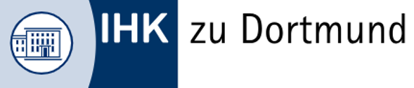
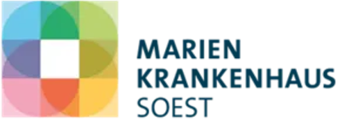

Nachhaltigkeit,
die Leben verändert
Von der Entsorgung zur Lebensrettung

Sammlung
Gebrauchte oder gespendete Geräte werden direkt aus Krankenhäusern gesammelt
Wiederherstellung
Die Geräte werden sorgfältig geprüft und repariert
Transport
Die aufbereiteten Geräte werden sicher in die Zielländer transportiert

Lebensrettung
Die Geräte erreichen Gesundheitseinrichtungen in den Zielländern und werden dort eingesetzt
Aus Schrott machen wir Leben

Unsere Mission ist es, gebrauchte medizinische Geräte zu retten, durch unsere erfahrenen Ingenieure sorgfältig zu prüfen und sie wieder voll funktionsfähig zu machen. Nach einer gründlichen Aufbereitung geben wir diese hochwertigen, geprüften Geräte an Gesundheitseinrichtungen in Entwicklungsländern weiter.
ReMed verbindet Nachhaltigkeit mit sozialer Verantwortung, indem wir Ressourcen effizient nutzen und die Geräte mit höchster Präzision und Expertise aufbereiten. So tragen wir zur Verbesserung der Gesundheitsversorgung in Regionen mit begrenzten Möglichkeiten bei.
Gemeinsam gestalten wir eine bessere und nachhaltigere Zukunft!
We strive to be a
global agent for
positive change.
We operate in Germany and we are open to everyone in places where life is harder, like Syria, South Africa, and anywhere in the world.

Lücken in der medizinischen Versorgung

Unsere Vorteile:

Krankenhäuser
- Kostenersparnis
- Zeitaufwand minimieren
- Positives Image
- Partnerschaften

Umwelt Verantwortung
- Umwelt schonen
- Verringerung von Elektroschrott
- Einsparung von Ressourcen
- Nachhaltigkeit

Soziale Verantwortung
- Verbesserung der Lebensbedingungen
- Unterstützung des Gesundheitssystems
- Entwicklungsländer Wirtschaft stärken
- Verbesserte Gesundheitsversorgung
Über Uns:

Eng. Salah Mokabel
B.Eng Biomedizinische Technologie
Email: Mokabel@re-medical.de
Telefon: 0176 47640793

Eng. Mohamad Kousa-Hasan
B.Eng Biomedizinische Technologie
Email: Kousa@re-medical.de
Telefon: 0176 61406135
Partner:


 







 @ReMed.de
@ReMed.de